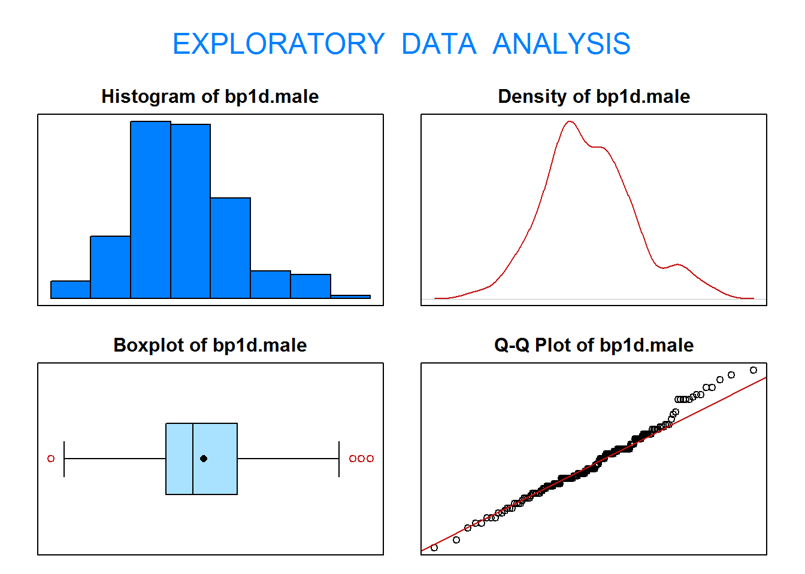

Práctica 3: Contrastes de hipótesis paramétricos y análisis de la varianza
Author
Aritz Adin y Jaione Etxeberria
Published
31/10/2023
Descripción
En esta práctica vamos a trabajar con el fichero de datos diabetes.
El fichero de datos contiene 19 variables medidas sobre 403 pacientes. Estos pacientes forman parte de un estudio con 1046 sujetos diseñado para investigar la prevalencia de la de obesidad, diabetes, y otros factores de riesgo cardiovasculares para Afroamericanos en Virginia, EEUU.
Según Dr John Hong, Diabetes Mellitus Tipo II está asociada con la obesidad. El índice cintura-cadera puede ser un predictor en diabetes y enfermedades de corazón.
Diabetes Mellitus Tipo II está también asociada con hipertensión y ambos pueden ser parte del “Síndrome X”.
Los 403 sujetos del estudio son aquellos a los que se les hizo un seguimiento de diabetes. La hemoglobina glicosilada >7.0 se toma normalmente como diagnóstico positivo de diabetes.
Para más información ver el paper: Willems JP, Saunders JT, DE Hunt, JB Schorling. Prevalence of coronary heart disease risk factors among rural blacks: A community-based study. Southern Medical Journal 90: 814-820; 1997. https://europepmc.org/abstract/med/9258308
Estas son las variables que contiene el fichero (se han eliminado alguna del fichero original y se han reemplazado algunos valores perdidos):
Variable
Descripción
id
Subject ID
chol
Total Cholesterol (mg/dL)
stab.glu
Stabilized Glucose (mg/dL)
hdl
High Density Lipoprotein (mg/dL)
ratio
Cholesterol/HDL Ratio
glyhb
Glycosolated Hemoglobin (%)
location
Buckingham or Louisa
age
Age of patient (years)
gender
Male or Female
height
Height (inches)
weight
Weight (pounds)
frame
Body frame size (small, medium, large)
bp.1s
First Systolic Blood Pressure (mmHg)
bp.1d
First Diastolic Blood Pressure (mmHg)
waist
Waistline (inches)
hip
Hip measurement (inches)
En primer lugar, cargamos la librería PASWR2 y leemos el fichero diabetes en R:
id chol stab.glu hdl ratio glyhb location age gender height weight frame
1 1000 203 82 56 3.6 4.31 Buckingham 46 female 62 121 medium
2 1001 165 97 24 6.9 4.44 Buckingham 29 female 64 218 large
3 1002 228 92 37 6.2 4.64 Buckingham 58 female 61 256 large
4 1003 78 93 12 6.5 4.63 Buckingham 67 male 67 119 large
5 1005 249 90 28 8.9 7.72 Buckingham 64 male 68 183 medium
6 1008 248 94 69 3.6 4.81 Buckingham 34 male 71 190 large
bp.1s bp.1d waist hip
1 118 59 29 38
2 112 68 46 48
3 190 92 49 57
4 110 50 33 38
5 138 80 44 41
6 132 86 36 42
1. Contraste paramétricos
1.1. Contrasta al nivel de significación \(\alpha=0.05\) si el nivel medio de colesterol en los hombres del condado de Buckingham es superior a 200mg/dL. Justifica si puedes asumir normalidad.
Defimos la variable \[X=\mbox{"Nivel de colesterol (mg/dL) en los hombres del condado de Buckingham"}\]
## Seleccionamos los datos ##pos <-which(diabetes$gender=="male"& diabetes$location=="Buckingham")chol.manB <- diabetes$chol[pos] ## Comprobamos la condición de normalidad ##eda(chol.manB)
Size (n) Missing Minimum 1st Qu Mean Median TrMean 3rd Qu
86.000 0.000 78.000 174.000 203.603 197.500 202.536 230.750
Max Stdev Var SE Mean I.Q.R. Range Kurtosis Skewness
347.000 44.598 1988.956 4.809 56.750 269.000 0.677 0.402
SW p-val
0.208
Realizamos el contraste de hipótesis (\(\alpha=0.05\)) \[\begin{eqnarray*}
H_0: \, \mu=200 \\
H_1: \, \mu>200 \\
\end{eqnarray*}\]
One Sample t-test
data: chol.manB
t = 0.74918, df = 85, p-value = 0.2279
alternative hypothesis: true mean is greater than 200
95 percent confidence interval:
195.6054 Inf
sample estimates:
mean of x
203.6029
Interpretación: Como el p-valor=0.228\(> \alpha=0.05 \Rightarrow\) No rechazar \(H_0\).
Es decir, con un nivel de significación de 5%, no podemos afirmar que el nivel medio de colesterol en los hombres del condado de Buckingham es superior a 200mg/dL.
1.2. Calcula la potencia del contraste anterior si el verdadero nivel medio de colesterol en los hombres del condado de Buckingham es 210 mg/dL. ¿Cuantas observaciones necesitarías en tu muestra para obtener una potencia de 0.9?
One-sample t test power calculation
n = 86
delta = 10
sd = 44.59771
sig.level = 0.05
power = 0.5382013
alternative = two.sided
Interpretación: Si el verdadero nivel medio de colesterol en los hombres del condado de Buckingham es 210 mg/dL, la probabilidad de rechazar la hipótesis nula en el test anterior (\(H1: \, \mu>200\)) es de 0.538.
One-sample t test power calculation
n = 210.9181
delta = 10
sd = 44.59771
sig.level = 0.05
power = 0.9
alternative = two.sided
Interpretación: Si el verdadero nivel medio de colesterol en los hombres del condado de Buckingham es 210 mg/dL, el tamaño de muestra necesario para obtener una potencia de 0.9 en el test anterior es \(n \geq 211\).
1.3. Contrasta al nivel de significación \(\alpha=0.10\), si la presión diastólica media de los hombres es distinta a la presión diastólica media de las mujeres.
Definimos las variables \[X=\mbox{"Presión diastólica (mmHg) de los hombres"}\]\[Y=\mbox{"Presión diastólica (mmHg) de la mujeres"}\]
Comprueba que las dos muestras provienen de poblaciones normales.
## Seleccionamos los datos de los hombres ##pos1 <-which(diabetes$gender=="male")bp1d.male <- diabetes$bp.1d[pos1]eda(bp1d.male)

Size (n) Missing Minimum 1st Qu Mean Median TrMean 3rd Qu
169.000 0.000 50.000 76.000 84.465 82.000 84.200 92.000
Max Stdev Var SE Mean I.Q.R. Range Kurtosis Skewness
122.000 13.504 182.347 1.039 16.000 72.000 0.124 0.351
SW p-val
0.058
## Seleccionamos los datos de las mujeres ##pos2 <-which(diabetes$gender=="female")bp1d.female <-diabetes$bp.1d[pos2]eda(bp1d.female)
Size (n) Missing Minimum 1st Qu Mean Median TrMean 3rd Qu
234.000 0.000 48.000 72.000 82.496 82.000 82.269 90.000
Max Stdev Var SE Mean I.Q.R. Range Kurtosis Skewness
124.000 13.474 181.535 0.881 18.000 76.000 -0.014 0.216
SW p-val
0.232
## Test para la igualdad de varianzas ##var.test(bp1d.male, bp1d.female, ratio=1, alternative="two.sided")
F test to compare two variances
data: bp1d.male and bp1d.female
F = 1.0045, num df = 168, denom df = 233, p-value = 0.969
alternative hypothesis: true ratio of variances is not equal to 1
95 percent confidence interval:
0.7605823 1.3352151
sample estimates:
ratio of variances
1.004471
Como p-valor=0.969>0.05, no podemos rechazar la hipótesis nula de igualdad de varianzas.
Realiza el correspondiente test de medias. \[\begin{eqnarray*}
H_0: \, \mu_X-\mu_Y=0 \\
H_1: \, \mu_X-\mu_Y \neq 0 \\
\end{eqnarray*}\]
Two Sample t-test
data: bp1d.male and bp1d.female
t = 1.4469, df = 401, p-value = 0.1487
alternative hypothesis: true difference in means is not equal to 0
90 percent confidence interval:
-0.2747344 4.2142710
sample estimates:
mean of x mean of y
84.46534 82.49558
Interpretación: Como el p-valor=0.149\(> \alpha=0.10 \Rightarrow\) No rechazar \(H_0\).
Es decir, con un nivel de significación de 10%, no podemos afirmar que la presión diastólica media de los hombres sea distinta a la presión diastólica media de las mujeres.
1.4. Se dispone de dos aparatos, uno nuevo y otro antiguo, para medir los niveles de glucosa en sangre. Los médicos sospechan que el nuevo aparato proporciona niveles de glucosa en sangre superiores al antiguo. Se dispone de una muestra con 15 pacientes diabéticos a los que se les ha medido los niveles de glucosa con los dos aparatos. Las medidas se encuentran en el fichero GLUCOSE de la librería PASWR2.
## Cargamos los datos ##data(GLUCOSE)print(GLUCOSE)
One Sample t-test
data: d
t = 17.335, df = 14, p-value = 3.701e-11
alternative hypothesis: true mean is greater than 0
95 percent confidence interval:
13.08064 Inf
sample estimates:
mean of x
14.56
Paired t-test
data: GLUCOSE$new and GLUCOSE$old
t = 17.335, df = 14, p-value = 3.701e-11
alternative hypothesis: true mean difference is greater than 0
95 percent confidence interval:
13.08064 Inf
sample estimates:
mean difference
14.56
Interpretación: Como el p-valor\(\approx 0 < \alpha=0.05 \Rightarrow\) Rechazar \(H_0\).
Es decir, con un nivel de significación de 5%, existen evidencias estadísticas para afirmar que el nuevo aparato proporciona mediciones más altas (en media) que el antiguo.
1.5. Contrasta al nivel de significación \(\alpha=0.05\) si la proporción de hombres con hemoglobina glicosilada (glyhb) por encima del 6% es superior a 0.2.
Calcula el número de hombres en la muestra con glyhb por encima del 6% y el total de hombre de la muestra.
Definimos la variable \[X=\mbox{"Número de hombres con hemoglobina glicosilada por encima del 6%"} \sim ~ Bin(n,\pi)\]
Realiza un test exacto y un test aproximado para la proporción. \[\begin{eqnarray*}
H_0: \, \pi=0.2 \\
H_1: \, \pi>0.2 \\
\end{eqnarray*}\]
## Test exacto binom.test(x, n, p=0.2, alternative="greater", conf.level=0.95)
Exact binomial test
data: x and n
number of successes = 39, number of trials = 169, p-value = 0.182
alternative hypothesis: true probability of success is greater than 0.2
95 percent confidence interval:
0.1783787 1.0000000
sample estimates:
probability of success
0.2307692
## Test aproximadoprop.test(x, n, p=0.2, alternative="greater", conf.level=0.95)
1-sample proportions test with continuity correction
data: x out of n, null probability 0.2
X-squared = 0.81694, df = 1, p-value = 0.183
alternative hypothesis: true p is greater than 0.2
95 percent confidence interval:
0.1792768 1.0000000
sample estimates:
p
0.2307692
Interpretación: Como el p-valor>\(\alpha=0.05 \Rightarrow\) No rechazar \(H_0\).
Es decir, con un nivel de significación de 5%, no podemos afirmar que la proporción de hombres con hemoglobina glicosilada por encima del 6% sea superior a 0.2.
1.6. Contrasta al nivel de significación \(\alpha=0.05\) si la proporción de hombres con colesterol por debajo de 200mg/dL es superior a la proporción de mujeres con colesterol por debajo de 200mg/dL.
Calcula el número de hombres en la muestra con colesterol por debajo de 200mg/dL y el total de hombres de la muestra.
Sea \[X=\mbox{"Número de hombres con colesterl por debajo de 200 mg/dL} \sim Bin(n_X,\pi_X)\]
2-sample test for equality of proportions with continuity correction
data: c(x, y) out of c(nx, ny)
X-squared = 0.073608, df = 1, p-value = 0.3931
alternative hypothesis: greater
95 percent confidence interval:
-0.06909495 1.00000000
sample estimates:
prop 1 prop 2
0.4674556 0.4487179
Interpretación: Como el p-valor\(=0.393>\alpha=0.05 \Rightarrow\) No rechazar \(H_0\).
Es decir, con un nivel de significación de 5%, no podemos afirmar que la proporción de hombres con colesterol por debajo de 200mg/dL sea superior a la proporción de mujeres con colesterol por debajo de 200mg/dL.
2. Análisis de la varianza
2.1. Contrasta al nivel de significación \(\alpha=0.10\) si el tamaño del cuerpo (frame) influye en la presión diastólica (bp.1d) de las mujeres.
Crea un nuevo fichero llamado diabetes.female solo con las mujeres.
Exploración gráfica: representa los diagrama de caja de la variable bp.1d según la variable frame.
Realiza el análisis de varianza con la función aov().
Comprueba si pueden asumirse las hipótesis del modelo.
Utiliza un test de Tukey para averiguar entre qué niveles de la variable frame existen diferencias significativas en los niveles medios de la variable bp.1d.
3. Para entregar
3.1. Contrasta al nivel de significación \(\alpha=0.10\), si la circunferencia de cadera media de los hombres es inferior a la circunferencia de cadera media de las mujeres.
Comprueba si las dos muestras provienen de poblaciones normales.
Realiza el correspondiente test de medias.
3.2. Se estudió la eficacia de la sulfinpirazona en prevenir la muerte después de sufrir infarto de miocardio. Para ello se consideraron pacientes que habían sufrido infarto de miocardio. A un grupo se les proporcionó sulfinpirazona y a otro grupo se les suministró placebo. En la siguiente tabla se muestra el número de pacientes de cada grupo que murieron y que superaron el infarto.
Death (all causes)
Survivors
Sulphinpyrazole
41
692
Placebo
60
682
Contrasta al nivel de significación \(\alpha=0.05\) si la proporción de muertes de pacientes que tomaron sulfinpirazona es inferior a la de pacientes que tomaron un placebo.
3.3. Considera el fichero diabetes. Crea un nuevo fichero que contenga únicamente a las mujeres del condado de Louisa.
Contrasta al nivel de significación \(\alpha=0.05\) si existen diferencias entre los niveles medios de la variable hdl según la constitución del cuerpo frame en las mujeres del condado de Louisa.
Si has detectado diferencias, averigua entre qué grupos existen diferencias estadísticamente significativas.